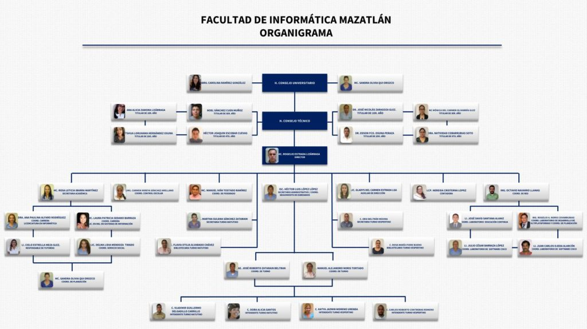

Durante el periodo rectoral del Lic. Audómar Ahumada Quintero (1985-1989), y siendo Coordinador Académico en la Zona Sur el M.C. Juan de Dios Garay Velázquez, se gestaron los trabajos para crear una licenciatura en informática. Como primer paso se implementó una Especialidad en Microcomputadoras apoyados por la Facultad de Ciencias de la Universidad Nacional Autónoma de México (UNAM), cuyo objetivo principal fue capacitar y actualizar docentes universitarios en el área informática. Teniendo como sede física el Departamento de Cómputo de la Coordinación Académica Zona Sur, bajo la responsabilidad del Dr. Raúl Carvajal Valdés y como encargados del laboratorio a la M.C. Rosa Elena Colado Martínez y el M.C. Rafael Mendoza Zatarain.
Posteriormente durante la rectoría del Ing. David Moreno Lizárraga (1989-1993) se realizaron estudios de mercado y factibilidad académica a través del departamento de Planeación y Estadística de la Universidad con la finalidad de una posible implementación de la carrera de Licenciatura en Informática en las zonas centro y sur de la Universidad.
Durante todos estos años (1985-1993) resultó invaluable el apoyo recibido por parte de dos académicos: El Dr. Carlos García Moreira de la Facultad de Ciencias de la UNAM (qepd) y el Dr. César González Beltrán de la Unidad de Informática del Instituto Nacional de Cardiología, quienes con sus cursos, consejos, apoyo académico y trabajo desinteresado, lograron consolidar la base académica de lo que hoy es nuestra Facultad. Es por eso que actualmente, nuestra biblioteca y laboratorio de cómputo, respectivamente, llevan los nombres de estos personajes, como un reconocimiento a su gran labor desarrollada.
El 14 de julio de 1992 se presenta el proyecto de nueva carrera al pleno de H. Consejo Universitario y es aprobado. Iniciando formalmente la Licenciatura en Informática el mes de Septiembre de 1992 y quedando al frente como Coordinador de la misma, el Dr. Raúl Carvajal Valdés. Esta carrera inició actividades en el fraccionamiento Playa Sur, donde tomaron clase estudiantes de la primera y segunda generación, durante tres años aproximadamente.


El objetivo del Programa Educativo Licenciatura en Informática es formar profesionales emprendedores, eficientes y con valores éticos, capacitados en la creación y mantenimiento de sistemas de información para la administración.
En cuanto al perfil de ingreso, se buscará que el candidato a ingresar cuente con las siguientes características:

En cuanto al perfil de ingreso, se buscará que el candidato a ingresar cuente con las siguientes características: